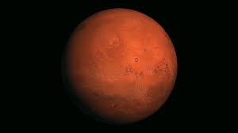

المريخ هو رابع كوكب في المجموعة الشمسية من حيث البعد عن الشمس، ويُعرف باسم "الكوكب الأحمر" بسبب لونه المميز الناتج عن أكسيد الحديد على سطحه.
حقائق عن المريخ
- المسافة من الشمس: حوالي 227.9 مليون كيلومتر
- القطر: حوالي 6,779 كيلومتر
- المدة الزمنية لدورانه حول الشمس: حوالي 687 يومًا أرضيًا
- درجة الحرارة: تتراوح بين -87 إلى -5 درجة مئوية